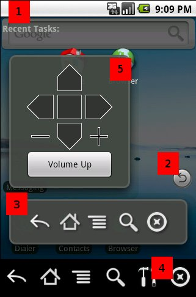

- 1 - Notification bar
- 2 - Service popper
This button can be dragged around the screen to reposition it.
Tap to show/hide the service bar. Long-press to enable/disable the
D-Pad, if enabled the D-Pad will show and hide along with the service bar.
- 3 - Service bar
Main hardware button input. You can drag this by the "Close" button.
Long-press on the "Close" button will change the orientation to either
horizontal or vertical.
- 4 - Home activity/Home button interface
The main interface that shows when you open SoftKeys. By default, if
assigned as your main launcher, this will come up if you double-press the
hardware home button.
- 5 - Service D-Pad/Custom Buttons
This bar is enabled and disabled by long-pressing on the Service
Popper. You can move this window by dragging on of the top two corners
where there are no buttons. The +/- will show or hide more custom buttons.
To configure the custom buttons, long-press on + or -
SoftKeys has a lot of options so you can use it the way you like.
These options control the always visible on-screen service. That
includes the service popper, and the service bar.
- Run Service:
Enable or disabled the on-screen service. When
disabled, the only way to use SoftKeys is through the home-button
interface.
- Size:
Choose how big the service icons are. By default,
they are the same size as all icons on the device, but you can make them
bigger or smaller here.
- Button Bar Transparency:
Set the transparency level of the service bar while on screen. Usually
you will want the service bar to be only a little transparent so you can
easily identify the buttons.
- D-Pad/Custom Transparency:
Set the transparency level of the service D-Pad while on screen.
- Popper Transparency:
Set the transparency of the service popper button. Usually you will
want the service popper to be partially transparent so it doesn't obscure
the screen.
- Auto Hide:
If selected then the service bar will automatically hide after you
select a button.
- Auto Hide After Back:
If left unselected while the Auto Hide option is selected, then hitting
the back button will not auto hide the bar, but all the other buttons will.
If selected then hitting back will also auto hide the bar.
- Transparent Background:
Hide the service bar background and leave only hovering buttons.
These options control the behaviour of the virtual home button in both
the main SoftKeys interface, and the on-screen softkeys service.
- Normal Press:
The launcher to open when you press the virtual home button.
- Long Press:
The launcher to open when you long-press the virtual home button, if
you want easy access to two launchers.
- Return After Back:
For the SoftKeys home button interface, checking this box will make it
re-open the interface if you select the virtual back button. This does not
effect the SoftKeys service.
These options control what SoftKeys does when you press the physical
home button on the device if SoftKeys is set as the default launcher.
These settings only have any effect if SoftKeys is the default
launcher.
- Home Button:
This sets the physical home button behavior. By default, pressing home
will pass through to your selected "Normal Press" launcher. Double-tapping
the physical home will bring up the SoftKeys home interface. You can
change this to be the opposite, single press for SoftKeys, double-press for
launcher.
- Double Press Time:
How many milliseconds to wait for the second home button press.
These options control the layout of the buttons and any visual elements
like themes.
- Theme:
Select theme. Themes can be downloaded and installed from the market,
and can change the icons and layouts of the interface.
- Exit Button:
If selected, then an exit button will appear in the SoftKeys home
interface. If unchecked, then there will be no exit button. You can press
the physical home button to exit SoftKeys if you have to exit button.
- Prefs Button:
Enables the preferences button in the SoftKeys home interface. Without
this button you can still access Preferences through the SoftKeys menu or
by long-pressing on the black background above the SoftKeys buttons near
the middle of the screen.
- Blur Behind:
If enabled, the background will be blurred when you bring up the home
button interface. This tends to be slow on many devices and is off by
default.
- Dim Background:
Dims the background behind the home interface. This is a fast
operation and makes it obvious when SoftKeys is the main activity. If
unselected then the windows behind the home interface will show through
like normal but you will be unable to interact with them because SoftKeys
is actually controlling the whole screen when in the home interface.
- Recent Apps:
Select to toggle the Recent Apps at the top of the home interface. If
your device has a disabled Recent Apps (typically long-press home) then
turning this on will give you similar functionality, as the Recent Apps
will show at the top of the SoftKeys home screen, and you can tap on the
icons to launch them.
- Change Button Order:
This will bring up another configuration screen allowing you to assign
the order of the home/menu/back/search buttons. This is the order they
will show up both in the service and in the home interface.
SoftKeys can also add notifications to the notification bar that will
send virtual key presses.
- SoftKeys Button:
Add a notification to launch the home interface to the notification
bar.
- Menu Button:
Add a notification to to press "menu" from the notification bar
- Home Button:
Add a notification to to press "home" from the notification bar
- Back Button:
Add a notification to to press "backu" from the notification bar
- Search Button:
Add a notification to to press "search" from the notification bar
Failed to find file: [filename]
This error means SoftKeys was unable to find a system component it needs
to operate. The two main components are SuperUser and the input script.
Most android devices come preinstalled with the input script, and if your
phone is rooted it usually has SuperUser installed as well. However it's
possible to have a rooted phone and not have SuperUser installed. If this
is the case then SoftKeys will probably not work correctly.
Usually what will happen is the virtual home button will work, but
menu/back/search will not. If this is the case, make sure you have a
working SuperUser installation.
Unable to check for file: [filename]
This means the policy manager on the device is disallowing the file
check. You might see this instead of seeing the "Failed to find file"
message. This means you may or may not have the required parts, but
SoftKeys can't tell. SoftKeys may or may not work. If it doesn't work
right, it will behave as explained above in the "Failed to find file"
section.
Unable to execute as root
Something happened and SoftKeys was unable to obtain root access, which
is required to send key events to other applications. Maybe something is
wrong with your SuperUser installation, or you have denied SoftKeys root
access when the SuperUser prompt was shown. In this case, it will function
as described under "Failed to find file" because it will be unable to
execute the required commands as root.